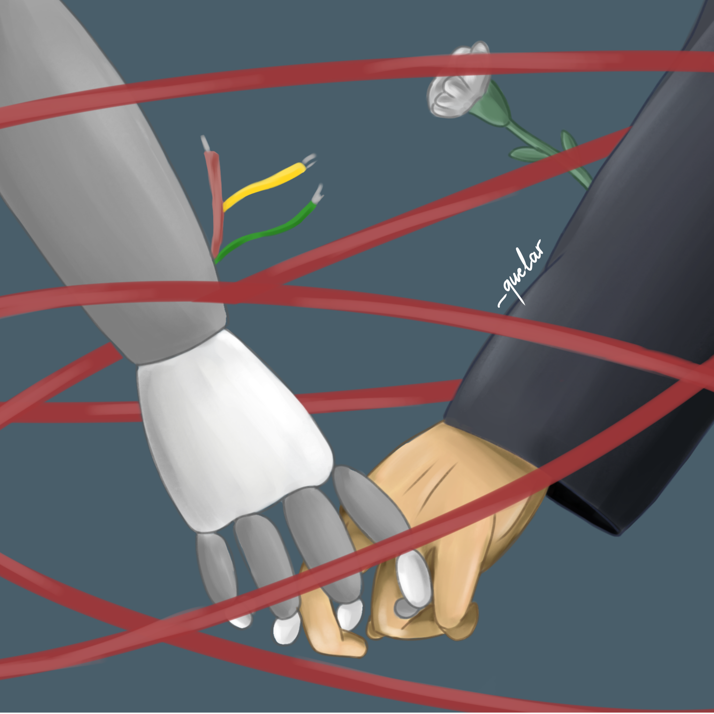

Humano & Tecnología
Esta ilustración hace referencia a la conexión actual que tenemos con la tecnología y sus avances. Haciendo especial énfasis en que hemos llegado a un punto donde esa conexión se ha vuelto casi tangible. Tanto así, que comenzamos a romantizar todo esto, olvidando lo realmente importante: la esencia humana.
¿Hilo rojo del destino?
Existe un símbolo muy conocido que representa “la conexión entre personas destinadas a encontrarse”: el hilo rojo. Este símbolo puede aplicarse a distintos ámbitos de la vida: el amor, las relaciones, la protección, el destino; pero es en este último donde toma especial relevancia. El hilo rojo nos recuerda que no podemos escapar de nuestro destino, sino que debemos esperar el momento adecuado.
Aquí surge una pregunta importante:
¿Estamos realmente preparados como humanos para que nuestro destino esté tan profundamente ligado a la tecnología?
¿O esta evolución nos está sobrepasando, al punto de olvidar que las verdaderas conexiones deberían seguir siendo entre seres humanos?
Naturaleza & Tecnología

El planeta es un sistema vivo, entramado de redes y ciclos que mantienen en equilibrio la existencia. En nuestro deseo por tener un poco más vida, un poco más tiempo, creamos herramientas que nos han ayudado a subsistir. Creamos tecnología; proceso para agilizar la creación de herramientas, y una herramienta en sí misma. Logramos vivir más tiempo, más cómodos, más seguros. Y en ese proceso hemos olvidado regresar al ciclo. La tecnología moderna ha creado un proceso lineal que consume recursos sin retornarlos, destruyendo ciclos naturales, creando brechas desiguales. Defiendo la tecnología como herramienta que no nos condena a la extinción, ni amplía la desigualdad, defiendo la tecnología como una herramienta con un vínculo estrecho con la naturaleza, diseñada para regenerar la vida, para restaurar los ciclos que hemos fracturado y para mejorar las condiciones de todos aquellos que aún no gozamos sus beneficios. Defiendo una tecnología que se replantea cómo extraemos, usamos y descartamos los recursos, buscando siempre cerrar los ciclos minimizando el impacto.
Sociedad & Tecnología

Nuestra realidad actual está llena de constantes estímulos. Muchas cosas siempre están compitiendo por nuestra atención: notificaciones, videos cortos, redes sociales y todo lo que consumimos. Siempre estamos en búsqueda de lo impactante, de lo emocionante y extraordinario. Las cosas simples del mundo real comienzan a pasar desapercibidas porque estamos tan atrapados en la necesidad de siempre estar entretenidos u ocupados.
Nuestro ritmo se ha vuelto tan acelerado que simplemente hemos perdido la capacidad de parar y apreciar. Por esta razón, el detenernos a observar y valorar lo simple, lo cotidiano o lo pequeño, se ha perdido.
Nos cuesta tanto poder estar presentes, porque siempre queremos algo más llamativo, más ruido o más rápido. Y no todo debe viajar a esa misma velocidad. Por esto, debemos conservar las cosas que su ritmo natural es lento, porque así es como funcionan.
Ahora detenerse un momento se ha vuelto un acto de rebeldía, una forma de poder reconectar con nuestra esencia humana y con la sociedad que nos rodea. Pero no deberíamos dejar que esto siga así, recuperar nuestra capacidad de estar presentes es también recuperar nuestro valor como humanidad.